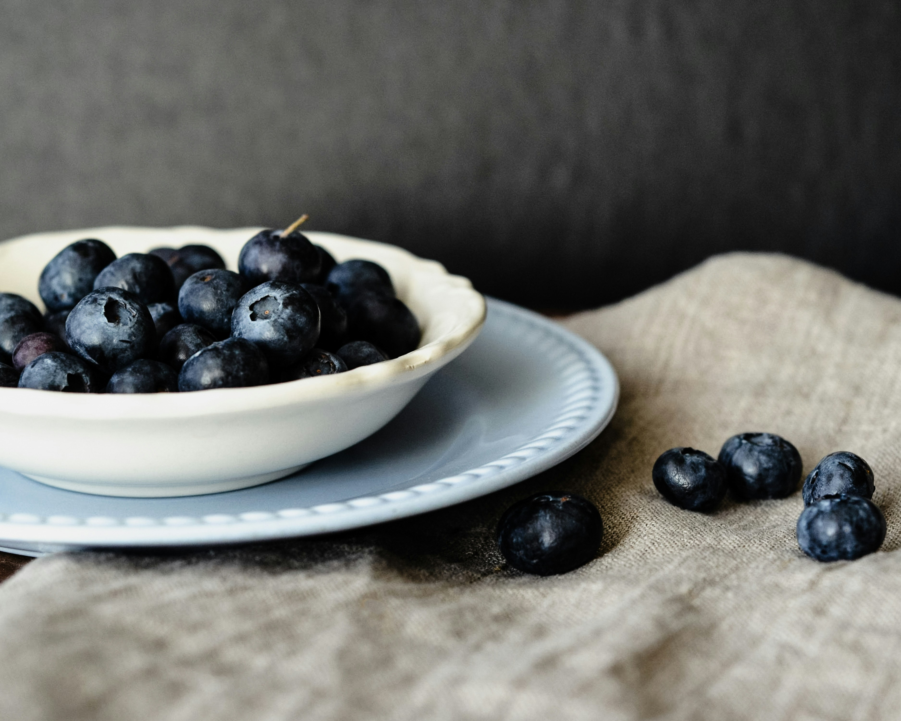

Easy, Healthy Midnight snack

Image Source: Unsplash (link), Author: Todd Cravens
Dish Description
This is an easy midnigh snack recipe. It involves no cooking and minimal preparation.
Ingredients
- 300 ml of cottage cheese
- 100g of blueberries
- 2 tablespoons of honey
- Optional: a pinch of cinnamon powder
- Optional: tablespoon of rum, vanilla extract
Steps
- Put 300g of cottage cheese into a bowl.
- Put 2 tablespoons of honey, cinnamon powder, rum or vanilla extract into the bowl.
- Mix them very well.
- Wash the blueberries and dry them.
- Add the blueberries into the cream cheese. You're all done!
- Bon appétit!